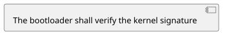
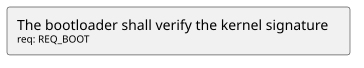
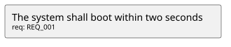
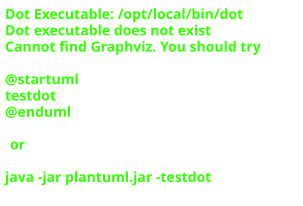
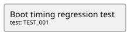
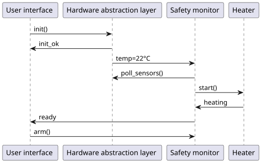
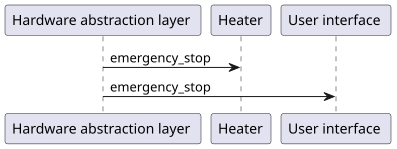
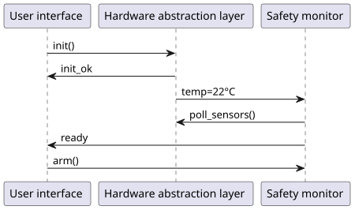
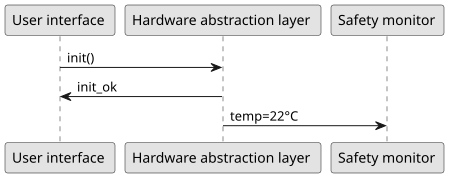

Diagrams over the entity graph
A diagram directive's body is PlantUML source. In the plain
.. plantuml::/.. uml:: spelling it reaches the compiler exactly as
written; in the three spellings below it is first expanded as a Jinja template
against the project's entity graph, so a picture can be derived from what the
documents declare rather than restated beside them.
Because the graph spans documents, expansion happens after the whole project has been indexed — which is why diagram compilation belongs to the site rather than to any one library.
Drawing what a filter selects
filter() takes the same expression language an .. entity-table::'s
:filter: is written in, and flow() turns an id into a clickable node.
Clicking one lands on exactly the anchor a :ref: to that entity would.

Every requirement in the project
.. needuml:: is accepted as a second spelling of the same directive, so a
migrating sphinx-needs project keeps its documents.
Reading one entity's fields
needs holds every entity by id and need(id) fetches one. Attributes,
relations and derived back-links share the one namespace the directive's
options do, so .. req::'s :owner: is read as need.owner.

One requirement and what it links to
@startuml
rectangle "The system shall boot within two seconds\n<size:10>req: REQ_001</size>" as REQ_001 [[requirements.html#entity-REQ_001]]
note right of REQ_001
owner: platform
status: in_progress
end note
rectangle "Boot sequence\n<size:10>spec: SPEC_001</size>" as SPEC_001 [[requirements.html#entity-SPEC_001]]
REQ_001 --> SPEC_001
rectangle "Staged boot loader\n<size:10>impl: IMPL_001</size>" as IMPL_001 [[requirements.html#entity-IMPL_001]]
REQ_001 --> IMPL_001
@enduml:debug: shows the expanded PlantUML below the picture — the text that was
actually compiled, which is what an author needs when a diagram comes out
wrong.
Extra values
:extra: binds names into the template's context, as comma-separated
name: value pairs.

An architecture diagram inside an entity
.. entity-arch:: — sphinx-needs spells it .. needarch:: — is written
inside an entity and binds that entity as need. Writing one outside any
entity is reported as uml.arch-outside-entity rather than drawn against a
need bound to nothing.
Its `:key:` stores the template on the entity, so another diagram can import it. This is what makes architecture diagrams compositional: a component draws itself once, and every diagram that reaches it pulls that picture in rather than restating it.
RequirementThe bootloader shall verify the kernel signatureREQ_BOOT

Details
| Status | open |
|---|---|
| Owner | platform |
Verification criteria
A diagram written inside a section still knows the entity it sits in, even though a section's body deliberately forgets the entity's type:

Links to
Importing another entity's diagram
uml(id, key) expands the diagram another entity wrote, with need
rebound to that entity. imports(id, relation) does the same for everything
an entity points at along a relation, skipping targets that drew nothing.
A diagram that reaches itself — directly, or around a cycle — is reported as
uml.recursive-import with the route it took, rather than expanding until
the build dies.
The bootloader's own picture, pulled in from where it was written
Named PlantUML preambles
:config: names a preamble declared under [uml_configs] in the site's
rinx.toml — the preamble's text, never a path to a file holding
it, so it survives a sandboxed build relocating files. The preamble is inserted
directly after @startuml, which is the only place PlantUML reads a
skinparam from. Naming one that is not declared is
uml.unknown-config rather than a diagram quietly missing its styling.

The same graph, with the site's monochrome preamble applied
Flowcharts of the graph itself
.. entity-flow:: — sphinx-needs spells it .. needflow:: — draws the
entities a filter selects and the relations between them, without a template.
The picture is generated: there is no body to write, and the directive
reports one rather than mistaking it for PlantUML source.

Every entity in the project, and every relation between them
Selecting a subgraph, and labelling its edges
:filter: is the same expression language an .. entity-table::'s is, and
:relations: — sphinx-needs spells it :link_types: — says which relations
become edges. An edge whose target the filter left out is not drawn, so a
filtered picture stays a picture of what was asked for.

Requirements and the specifications they link to, laid out sideways
The :name: above registers as an ordinary cross-reference target, so
requirement-flow links to the picture.
The generated source, and a preamble
:debug: shows the PlantUML that was compiled — worth more here than on a
written diagram, since this text exists nowhere else — and :config: names a
preamble from the site's [uml_configs], exactly as it does above.

The test cases, in monochrome
@startuml
skinparam monochrome true
rectangle "Boot timing regression test\n<size:10>test: TEST_001</size>" as TEST_001 [[requirements.html#entity-TEST_001]]
@endumlA filter matching nothing is reported as entity-flow.empty-result rather
than compiled: PlantUML rejects an empty diagram, so the build would otherwise
fail with a syntax error naming a generated file nobody wrote.
Sequence diagrams of the graph
.. entity-sequence:: — sphinx-needs spells it .. needsequence:: — walks
the graph instead of filtering it. From each :start: entity, a relation
named in :relations: leads to a message, and the same relations lead on
from the message to its receivers; every hop is an arrow labelled with the
message's title, and every receiver not yet seen is walked in turn.
The components and messages below are ordinary entities, declared inside a dropdown the way the sphinx-needs demo corpus declares its own.
The coffee machine's components and messages
ComponentHardware abstraction layerCOMP_HAL
Details
ComponentSafety monitorCOMP_SAFETY
Details
ComponentHeaterCOMP_HEATER
Details
Sends

Startup
The argument is the caption, as in sphinx-needs, and :name: registers the
picture as a cross-reference target: startup-sequence.
:relations: is mandatory — sphinx-needs defaults it to links, but
neither that nor "every relation" says which edges are messages. Several
starts share one walk, so a component the first start already reached is not
drawn twice:

Shutdown
Selecting receivers, and capping the picture
:filter: keeps only the receivers it selects — a receiver it rejects gets
no arrow and is not walked on from. :max-items: draws only the first
messages and says so beneath the picture; the build warns as well, as
entity-sequence.truncated, which a deliberate cap silences.

Startup without the heater

The first three messages of the startup, in monochrome
@startuml
skinparam monochrome true
participant "User interface" as COMP_UI [[diagrams.html#entity-COMP_UI]]
participant "Hardware abstraction layer" as COMP_HAL [[diagrams.html#entity-COMP_HAL]]
participant "Safety monitor" as COMP_SAFETY [[diagrams.html#entity-COMP_SAFETY]]
COMP_UI -> COMP_HAL : init()
COMP_HAL -> COMP_UI : init_ok
COMP_HAL -> COMP_SAFETY : temp=22°C
@endumlShowing the first 3 of 8 messages; raise :max-items: (0 for all) to draw more.